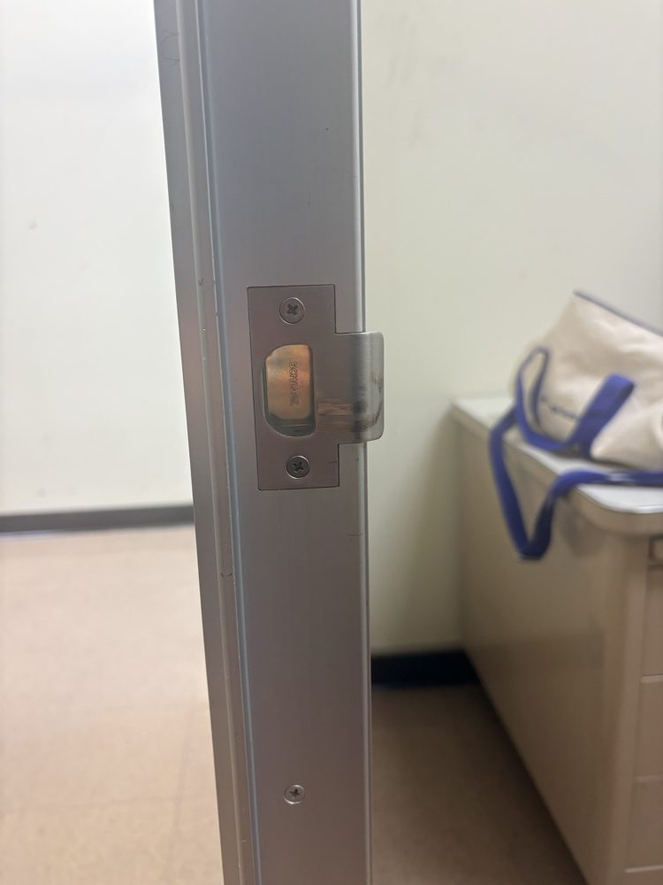
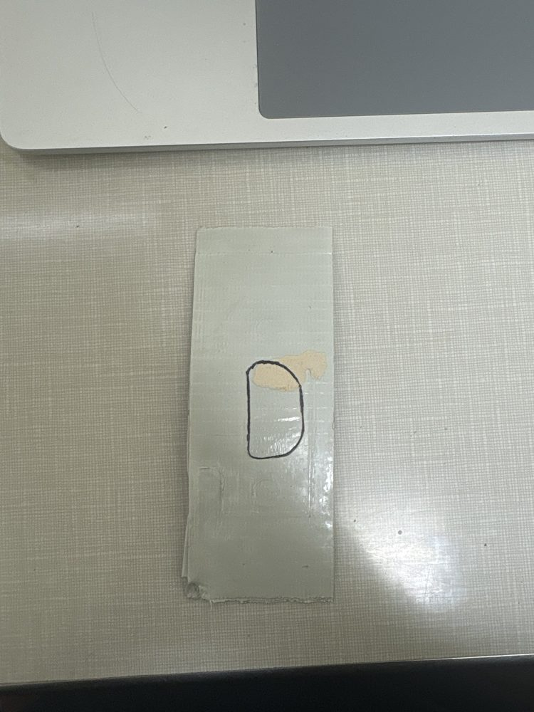
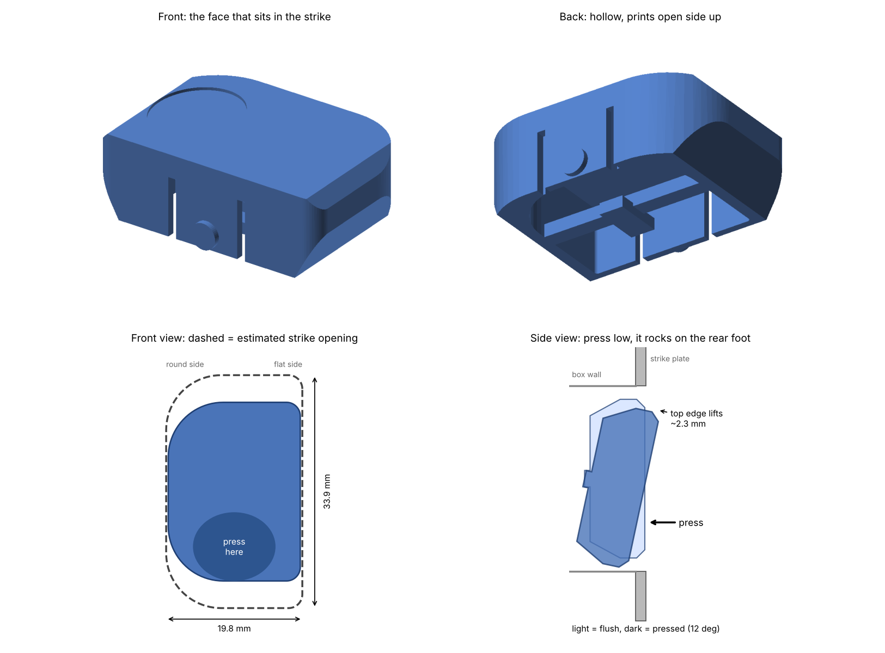
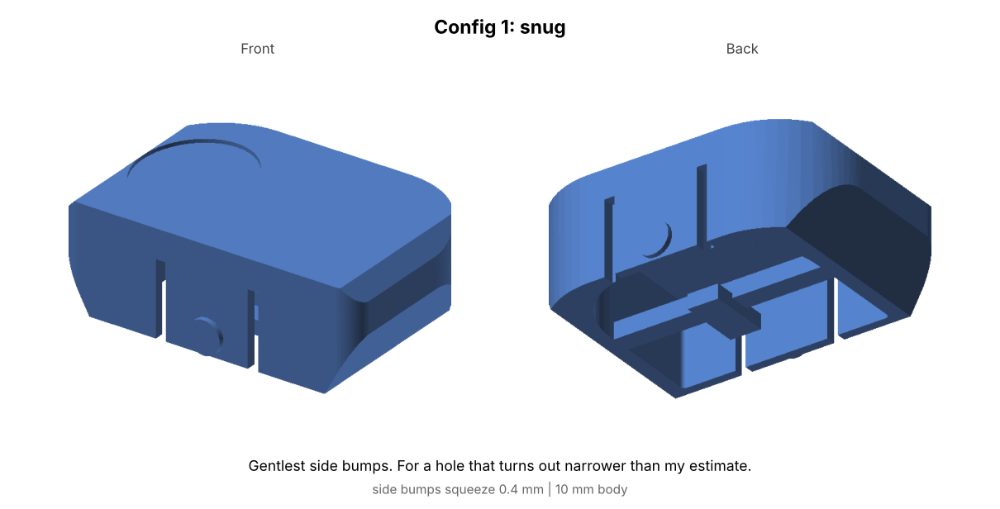
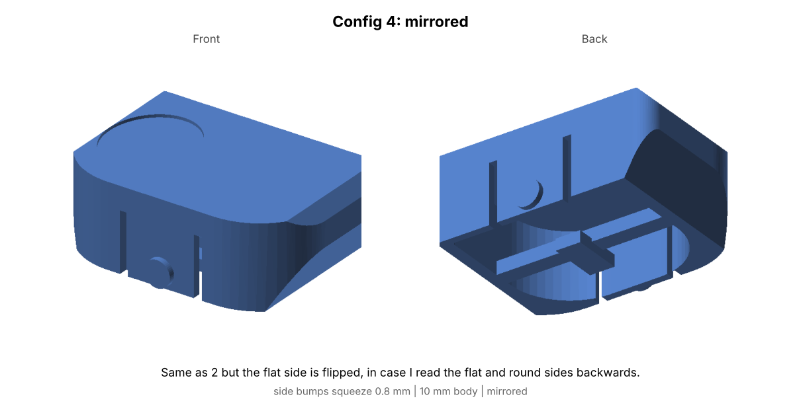
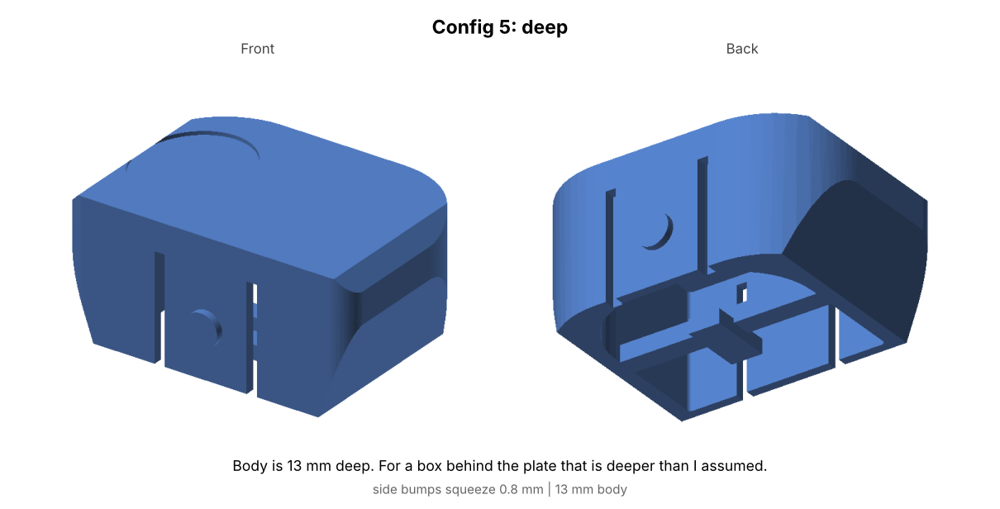
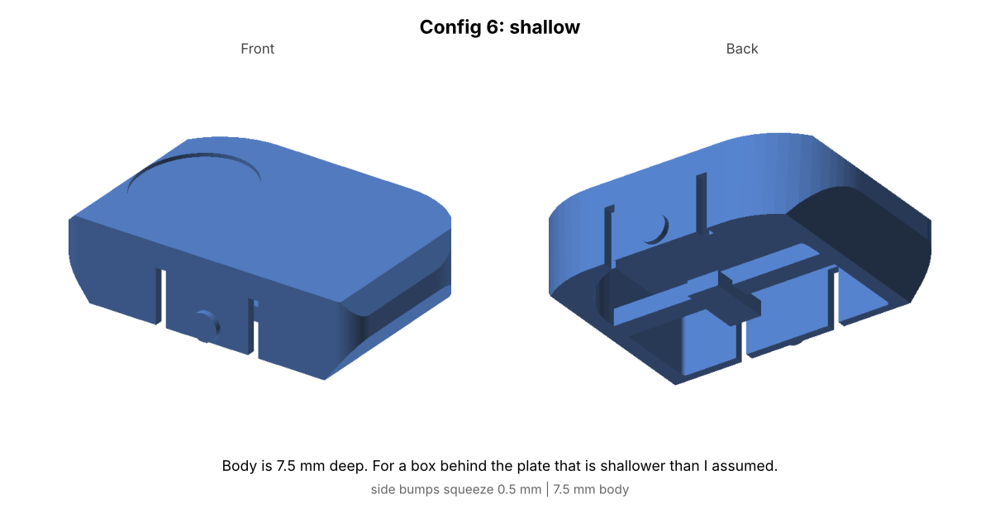
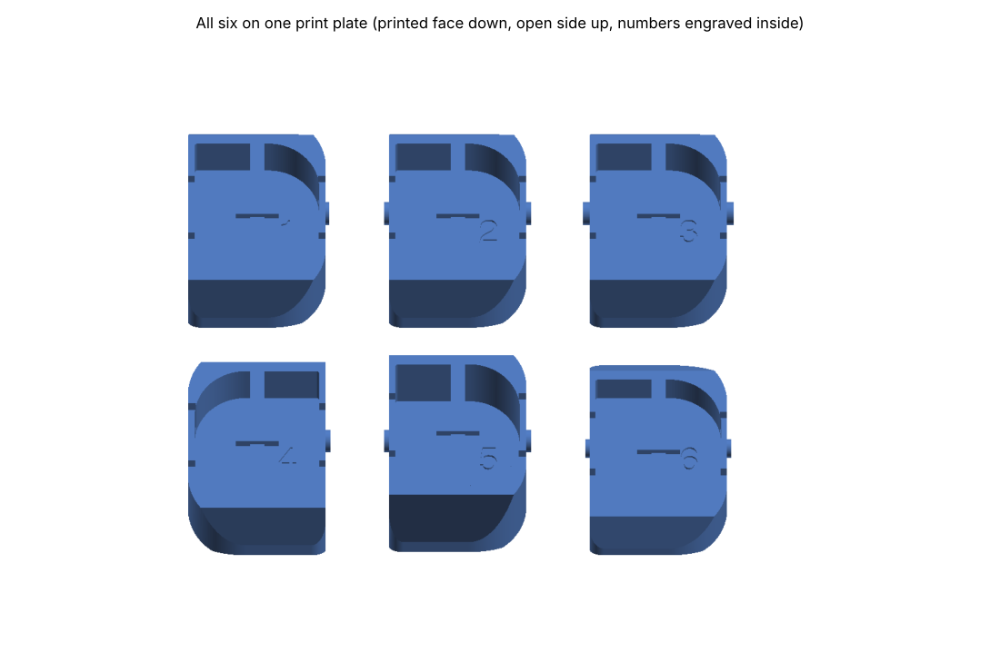

Designed in CadQuery (STEP files open in SolidWorks), 3D printed in PETG. Status: designed and checked, printing and testing next.
This is a small push-to-release plug that fills the hole in a door frame's strike plate, so the latch bolt has nothing to catch on. The door still closes, it just never latches, which means it can't lock behind you. Press the lower half of the face and the plug rocks back, the top edge lifts out a couple millimeters, and you can pull it free. No tools.
The interesting part of this one isn't the shape, it's how little I knew when I started. I had one photo of the strike plate, no calipers, no spec sheet, and no way to see inside the hole. So instead of guessing one design and hoping, I wrote down everything I didn't know and built a version that covers each unknown. Six versions, one print.

The only thing I had to start from: a Schlage-style strike plate on the frame.
Standard duct tape is 1.88 inches (48 mm) wide, so a strip of it is a ruler I always have on me. I pressed a piece over the hole, traced the outline, and photographed the tape flat. Using the tape's width as the scale, the outline came out around 20 mm wide by 34 mm tall, flat on one side with big rounded corners on the other.

The duct tape trace. Scale comes from the tape width.
I sanity checked that against standard sizes. These strike plates are about 2-3/4 by 1-1/8 inches, residential holes are small (around 25 by 16 to 19 mm), and commercial Schlage hardware has a bigger hole, so 20 by 34 is believable. A marker trace usually lands a little outside the real edge, so I designed for a hole about 0.5 mm smaller than the trace: 19.8 by 33.9 mm. That is an estimate, not a measurement, and the whole six-version plan comes from that.

One honest limit: version 1 tilts out, it doesn't shoot out. A spring leaf could do that, but it only works if I know how deep the box is, which I don't yet.
Each unknown became a version. All six print on one plate (numbers engraved inside each one), so one print run tests every guess.
| # | Version | What it solves for |
|---|---|---|
| 1 | Snug | Hole narrower than my estimate |
| 2 | Medium | My best guess for the hole |
| 3 | Tight | Hole wider than my estimate |
| 4 | Mirrored | I got the flat and round sides backwards |
| 5 | Deep | Box behind the plate is deeper than I assumed |
| 6 | Shallow | Box behind the plate is shallower than I assumed |

The side bumps squeeze the hole by 0.4 mm total, the gentlest of the three. If the hole turns out narrower than I think, this one still goes in without cracking the side tongues (they bend about 3 percent even if the hole is a full millimeter narrower). The downside is that if the hole is actually wider, it barely grips at all.
0.8 mm of squeeze. This is my best guess and the baseline the other versions are compared against. It still holds if the hole is 0.5 mm wider than my estimate, and the tongues stay under 3 percent bend if it's 0.5 mm narrower.
1.2 mm of squeeze, the strongest hold. If the hole is wider than my estimate, this is the one that keeps a grip. The trade is that a narrower hole puts about 5 percent bend on the tongues, which is getting close to where PETG could crack.

The hole is D shaped, flat on one side and rounded on the other. I read which side is which from a tape trace I was looking at from the sticky side, so it's very possible I flipped it. This is the medium version mirrored. If the other five don't seat because the corners don't line up, this is the fix.

The foot has to touch the bottom of the box for the plug to sit flush, so the plug's depth has to match the box. Versions 1 to 4 need 11.2 mm of box. This one has a 13 mm body and needs 14.2 mm, and it needs 15.5 mm while it's rocked. I also made the body 1 mm shorter (28 mm instead of 29) because with the pivot farther back, the full height would touch the hole sooner when rocking.

The other direction: if the box is shallow, the standard plug would stick out of the hole. This one is 7.5 mm deep and needs 8.7 mm flush and 10.1 mm rocked. Shorter tongues are stiffer, so I thinned the walls to 0.8 mm and cut the squeeze to 0.5 mm. It's also the one most likely to crack if the hole is tight: at a hole 1 mm narrower the tongues bend about 6.6 percent.

All six on one plate, printed face down.
I wrote the model as a script so every number is a setting I can change. Before printing I checked two things in code. Nothing here is measured yet, it's all predictions I'll compare against the real print.
The first version I drew only rocked about 6 degrees before its widest part hit the hole, which would have lifted the top edge only 1.5 mm. That's not enough to grab, and it would have been worse if the hole is a millimeter smaller than I think. I narrowed the body and chamfered the face edges, and the final versions rock 15 to 21 degrees before touching, even with a hole a full millimeter smaller than my estimate. Version 5 (deep) is the tightest at about 13 degrees in that worst case. Version 6 never touches.
I estimated the holding force from how much each side tongue bends (treating it like a diving board), assuming PETG and a friction guess of 0.35. The numbers are holding force in newtons and how much the tongue bends in percent. PETG starts to risk cracking somewhere around 4 to 5 percent, which is a rough number from memory, not from a datasheet.
| Version | Hole 0.5 mm wider | Hole as estimated | Hole 0.5 mm narrower | Hole 1 mm narrower |
|---|---|---|---|---|
| 1 Snug | 0.0 N / 0.0% | 2.6 N / 0.9% | 5.8 N / 2.1% | 9.1 N / 3.2% |
| 2 Medium | 1.9 N / 0.7% | 5.2 N / 1.9% | 8.4 N / 3.0% | 11.7 N / 4.2% |
| 3 Tight | 4.5 N / 1.6% | 7.8 N / 2.8% | 11.0 N / 3.9% | 14.3 N / 5.1% |
| 4 Mirrored | 1.9 N / 0.7% | 5.2 N / 1.9% | 8.4 N / 3.0% | 11.7 N / 4.2% |
| 5 Deep | 1.9 N / 0.7% | 5.2 N / 1.9% | 8.4 N / 3.0% | 11.7 N / 4.2% |
| 6 Shallow | 0.0 N / 0.0% | 7.1 N / 2.2% | 14.2 N / 4.4% | 21.2 N / 6.6% |
Versions 4 and 5 use the same side tongues as version 2, so their numbers match it.
The thing I can't predict is the bolt spring. If the spring pushes harder than the plug holds, the plug gets pushed in and the bolt follows it. That's exactly why the foot matters, and why the depth versions exist.
Printing all six tomorrow. I'll fill this in with what I find: